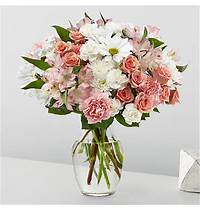
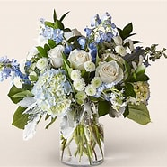
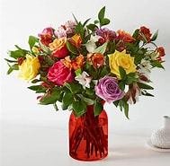

It's just, a little blush! Whoever you're sending this bouquet to, your loved ones are sure to crush hard on these gorgeous pink and white shades.
Colorful and blooming, this vibrant bouquet of two dozen roses is an instant mood booster. An abundance of the freshest roses is paired with touches of lush greenery to delight everyone from your special someone to your best friend for any occasion or sentiment.
Red roses are timeless, classic and iconic. Whether it's a romantic gesture or a meaningful gift to share how much you care, this bouquet of two dozen roses is bound to make your loved one swoon.
The Birthday Brights Bouquet is a true celebration of color and life to surprise and delight your special recipient on their big day! Hot pink gerbera daisies and orange roses take center stage surrounded by purple statice, yellow cushion poms, green button poms, and lush greens to create party perfect birthday display.
Let this uplifting arrangement be reminders of the clear skies ahead. Capturing the feeling of hope that a new day brings, this bouquet is composed of voluminous hydrangea blooms and vibrant belladonna delphinium to refresh their mood.
Bring a rainbow of color to any home with this bouquet. Blooming with an assortment of alstroemeria and roses, this vibrant beauty makes the perfect expression for all your special occasions this season.
Flowers of yellow and green, and pops of orange and purple. Full of color and texture, all you need is love and our Marmalade Skies Bouquet.
Let them know how much you care with a gorgeous bouquet that features carnations, stock, roses, lilies and Fuji mums. Each bloom is a thoughtful reminder of your support and love, while sitting in a beautifully crafted basket.
ake this day their best day. Our local florist handcraft a colorful array of flowers in a clear glass vase to create a celebration in bloom. Perfect to give for a special reason or to simply share a smile.